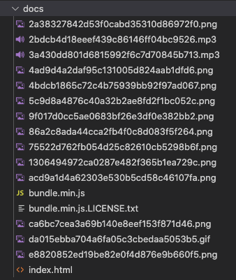
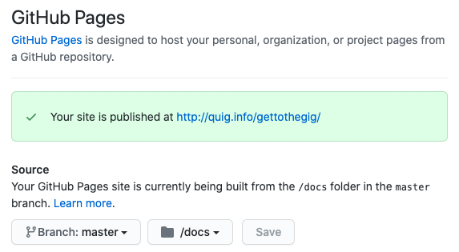

Deploying a Game With Webpack and Github Pages
Goal
In this post, we’re going to look at deploying a Phaser game with Webpack and GitHub Pages. You’ll need a game already made, even if it’s super bare bones. Phaser has decent tutorials. I’d also recommend the Phaser 3 Project Template.
Setup
I recently worked up a simple browser-based JavaScript game using the Phaser 3 and Tone.js frameworks. I called it “Get To The Gig” and wrote about it here.
GTTG is based on the Phaser 3 Project Template, which allowed me to get up and running pretty quickly. The template sets you up to utilize a few Node.js modules, including webpack, and babel. This helps to begin developing quickly with a local server and makes bundling a final distribution super easy.
I chose to host the game with GitHub Pages, a free service that GitHub offers for hosting static sites. It’s great. I use it for this blog, my main portfolio site, my band, volunteer orgs, etc.
So below, we’ll break down 1) Bundling your game for distribution 2) Hosting your game for anyone to play it
npm run build
The Phaser 3 Project Template provides your will some simple preset scripts for developing and deploying your game, listed below:
| Command | Description |
|---|---|
npm install |
Install project dependencies |
npm start |
Build project and open web server running project |
npm run build |
Builds code bundle with production settings |
What’s actually going on when npm run build is run? Lets take a look at the scripts object inside of the package.json file supplied with the Phaser 3 Project Template:
"scripts": {
"build": "webpack --config webpack/prod.js",
"start": "webpack-dev-server --config webpack/base.js --open"
},
The build script translates to webpack --config webpack/prod.js. So we’re telling Webpack to run with our custom configuration file. Webpack then bundles up our game files and creates a distribution folder with all the necessary files minified, uglied up, and with the file and path names set appropriately. Essentially that result folder can be dropped onto a server and the game will be playable in a browser.
Customize Webpack for Hosting on GitHub Pages
Using Webpack to bundle the game files into a distribution folder ensures the playable game files are organized and separate from our development files, and can be used to serve the game with a simple web server. Since GitHub Pages will serve a site from either the repo’s root level, or a folder named docs, we need to tell webpack to write the distribution files to a folder named docs instead of the default name dist.
We do this by specifying the path in the webpack/prod.js file, which we just saw is the config file used by npm run build.
module.exports = merge(base, {
mode: "production",
output: {
filename: "bundle.min.js",
// change output folder name to docs for hosting on github pages
path: path.resolve(__dirname, '../docs')
},
}
Now when we run npm run build, we’ll see a folder named docs generated in our repo with all the necessary game files.

Enable Pages For docs/
The last step is simply to enable GitHub Pages for the repo. We do this by specifying the branch and folder we want to serve as the source.
On the GitHub repo site, go to Settings > Pages, set the Source branch to master and the source folder todocs.

The above screenshot is specific to my game, but you should see something like Your site is published at http://example-user.github.io/my-game. If you navigate to that address, your game will load and be playable in the browser (if your game actually works, of course!)
You can check out the work-in-progress demo of Get To The Gig, and inspect the source code on GitHub to see how I have this exact setup in place. As I work on my game, I can build a new version and push the updates up to GitHub. Once synced, the new version of my game is ready to play!
Thanks for following along. Go make a game and share it with folks!